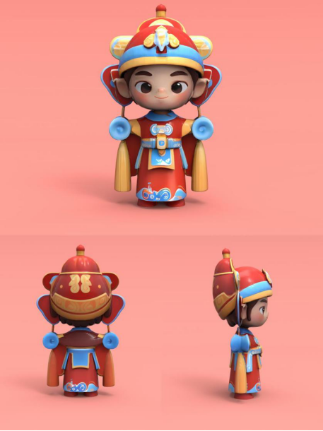
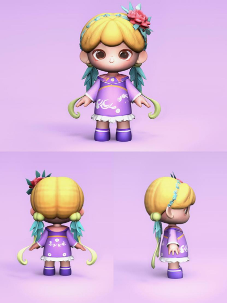
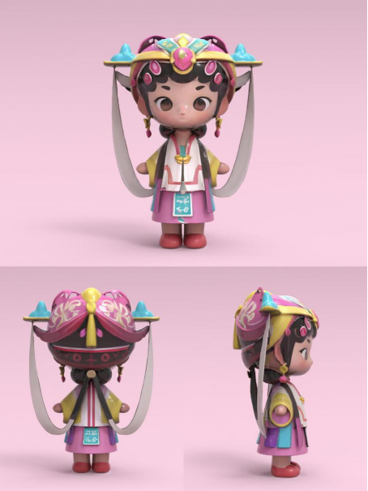
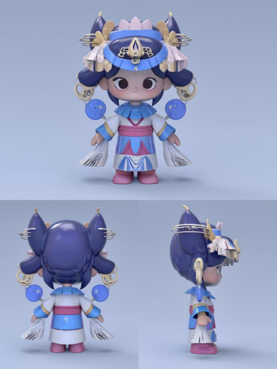
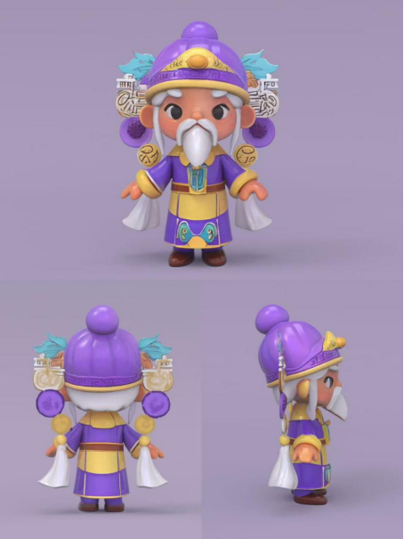

动物款Lucky Beast“福在眼前”灰塑娃娃三视图（设计师：冀常凯）

动物款灰塑盲盒Roaring Beast灰塑娃娃“万事如意”三视图（设计师：冀常凯）

动物款灰塑盲盒Finbloom灰塑娃娃“金玉满堂”三视图（设计师：冀常凯）
探索我们精心策划的各个主题系列，
每个系列都有独特的故事和收藏价值
简化线条与块面化的噪点渐变，模拟灰泥层叠的立体质感
每个都有独特的姿态和配色
提取灰塑中常见的广西传统纹样, 对其进行几何化、抽象化的再设计，使其更符合现代审美。
采用简洁的线条勾勒轮廓，以鲜明且协调的色彩搭配赋予角色活力.
动物款Lucky Beast“福在眼前”灰塑娃娃三视图（设计师：冀常凯）
动物款灰塑盲盒Roaring Beast灰塑娃娃“万事如意”三视图（设计师：冀常凯）
动物款灰塑盲盒Finbloom灰塑娃娃“金玉满堂”三视图（设计师：冀常凯）
戏曲款“加官进爵”款灰塑娃娃三视图（设计师：曹芸菲）

戏曲款“日神”款灰塑娃娃三视图（设计师：曹芸菲）

戏曲款“月神”款灰塑娃娃三视图（设计师：曹芸菲）

戏曲款“白素贞”款灰塑娃娃三视图（设计师：曹芸菲）
戏曲款“小青”款灰塑娃娃三视图（设计师：曹芸菲）
植物款“富贵吉祥”款灰塑娃娃三视图（设计师：何晨菲）
植物款“清涟仙子”款灰塑娃娃三视图（设计师：何晨菲）
植物款“福佑童子”款灰塑娃娃三视图（设计师：何晨菲）

植物款“炽焰小侠”款灰塑娃娃三视图（设计师：何晨菲）

造型特征：参考灰塑常见的祥瑞主题（如狮子、蝙蝠、仙鹤/孔雀、蛇，鳌鱼，金鱼），结合现代潮玩的“萌系”风格，将传统神兽拟人化。
头部：麒麟角象征祥，将瑞岭南传统瓦当纹样抽象化为发饰或耳部装饰。
面部：圆润轮廓搭配灵动大眼，保留灰塑浮雕立体线条感，增强亲和力。
身体：简化传统灰塑繁复纹样，以几何块面重组草龙纹，云纹吉祥图案。

造型特征：参考灰塑常见的祥瑞主题(如狮子、蝙蝠、仙鹤/孔雀、蛇,鳌鱼，金鱼)，结合现代潮玩的“萌系"风格，将传统神兽拟人化。
头部：头戴的帽子以蝙蝠元素为灵感，蝙蝠翅膀形状的装饰的造型。紫色头发自然垂下，增加了造型的柔和感。
面部：大大的蓝色眼睛充满童真，传递出灵动可爱的感觉。脸颊的粉色点缀，就像灰塑中通过色彩来凸显人物的精气神。
身体：整体身形圆润，呈现出坐着的姿态，脖颈处紫色祥云装饰，富有层次感。四肢的设计简洁，同时也展现出灰塑中对造型的简洁概括处理。
戏曲形象

造型特征：
头部：头戴的戏曲盔帽极具特色，红色为主调，搭配蓝色、黄色装饰，盔帽上的立体部件和细节雕琢，凸显角色的身份地位。
面部：大大的眼睛透着灵动，眉毛微微上扬，嘴角带笑，线条简洁但生动传神，能够快速传递角色的情绪。
身体：整体身形挺拔，身着传统戏曲服饰，服饰上的图案和配饰增加了立体感。衣服的剪裁和造型保留了戏曲服饰的宽松大气，在传统灰塑元素基础上进行创新，既保留韵味又符合现代审美。
植物娃娃

造型特征：
头部：借鉴了岭南灰塑的丰富装饰风格，头顶的绿色发箍及红花装饰造型，精致且灵动，头部造型可爱又具有传统韵味。
面部：大大的圆眼睛充满童真，通过简洁的五官展现出纯真温和的神态，如同灰塑作品中人物传递出的质朴情感。
身体：整体身形圆润可爱，服饰上的白色花纹及荷叶边裙摆等细节，增添了立体感与韵律感，既符合现代审美，又能让人联想到灰塑中丰富的造型变化。
木棉花娃娃

造型特征:参考灰塑常见的植物主题，结合现代潮玩的“萌系"风格，将植物拟人化。
头部：装饰有一朵大大的红色花朵，花瓣向外展开，形态夸张而生动，顶部还配有一片绿色的叶子作为点缀，整体给人一种活泼可爱、生机勃勃的感觉。
面部：面部表情设计得十分可爱，眼睛大而圆，充满了童真与好奇；嘴巴微微上扬，仿佛在微笑，显得非常友好和愉快。面部的颜色以浅肤色为主，眼睛是黑色，嘴巴则是粉红色的，这样的色彩搭配使得整个面部更加生动、立体。
身体：身体穿着一件白色的连衣裙，裙摆部分巧妙地融入了红色和绿色的装饰，这些装饰的形状类似于花瓣，与头部的花朵相呼应。连衣裙的设计简洁而不失童趣，既展现了少女的纯真与可爱，又体现了灰塑艺术的精湛技艺。
鱼头娃娃

造型特征:参考灰塑常见的祥瑞主题(如狮子、蝙蝠、仙鹤/孔雀、蛇,鳌鱼金鱼)，结合现代潮玩的“萌系"风格，将传统神兽拟人化。
头部：该盲盒造型的头部被巧妙地设计成鱼的形状，这一设计既独特又富有创意。头部的主色调为橙色，配以紫色的鱼鳍和鱼鳞，色彩鲜明且对比强烈，鱼的眼睛大而圆，显得非常灵动，增添了整个造型的生动感。
面部：面部表情可爱至极，眼睛闪烁着蓝色的光芒，透露出友好和愉快的气息。面部皮肤为浅色，与整体造型的色彩形成柔和的过渡，使整体看起来更加和谐。嘴巴微微上扬，仿佛在微笑，脸颊上还有淡淡的红晕，更加凸显了其可爱与活泼的特点。
身体：身体部分同样延续了鱼的设计元素，与头部完美衔接，形成一个整体感极强的造型。身体的主色调与头部保持一致，橙色与紫色的搭配依旧鲜明且富有活力。鱼鳍和鱼尾的设计精细且富有动感，使得整个造型更加栩栩如生。
粉色戏曲娃娃

造型特征:参考灰塑常见的非物质文化遗产主题，结合现代潮玩的“萌系"风格，将传统文化元素拟人化。
头部：头饰华丽繁复，这些色彩交织在一起，形成了强烈的视觉冲击力。发型为传统的双辫子样式，辫子上点缀着粉色的发饰，既体现了传统美感，又增添了几分俏皮与可爱。
头部：头饰复杂而精致，融合了蓝色和金色的元素，顶部装饰有类似花朵的图案，两侧配以对称的耳环，增添了整体的华丽感。发型独特，以深蓝色为主，梳成双高发髻，发髻上点缀有装饰物，既体现了传统文化的韵味，又不失现代卡通的活泼。
面部：面部轮廓圆润，线条柔和，给人一种亲切可爱的感觉。眼睛大而明亮，闪烁着智慧与友善的光芒；鼻子和嘴巴小巧精致，整体表情温和友好，易于让人产生亲近感。
身体：身着传统风格的服装，色彩以蓝色、白色和粉色为主，搭配和谐且富有层次感。服装上饰有几何图案，既展现了传统文化的精髓，又增添了视觉上的美感。
袖子宽大，飘逸灵动，符合传统服饰的特点。手中紧握书卷状物品，象征着文化或知识的传承，与非物质文化遗产的主题相呼应。
蓝色戏曲娃娃

造型特征:
参考灰塑常见的非物质文化遗产主题，结合现代潮玩的“萌系"风格，将传统文化元素拟人化。
头部：该盲盒造型的头部被巧妙地设计成鱼的形状，这一设计既独特又富有创意。头部的主色调为橙色，配以紫色的鱼鳍和鱼鳞，色彩鲜明且对比强烈，鱼的眼睛大而圆，显得非常灵动，增添了整个造型的生动感。
面部：面部表情可爱至极，眼睛闪烁着蓝色的光芒，透露出友好和愉快的气息。面部皮肤为浅色，与整体造型的色彩形成柔和的过渡，使整体看起来更加和谐。嘴巴微微上扬，仿佛在微笑，脸颊上还有淡淡的红晕，更加凸显了其可爱与活泼的特点。
身体：身体部分同样延续了鱼的设计元素，与头部完美衔接，形成一个整体感极强的造型。身体的主色调与头部保持一致，橙色与紫色的搭配依旧鲜明且富有活力。鱼鳍和鱼尾的设计精细且富有动感，使得整个造型更加栩栩如生。
紫色戏曲娃娃

造型特征:
参考灰塑常见的非物质文化遗产主题，结合现代潮玩的“萌系"风格，将传统文化元素拟人化。
头部：头戴紫色官帽，顶部圆润，边缘装饰有金色花纹，显得庄重华贵。两侧有蓝绿色的羽翼状装饰，增添了灵动性。帽子两侧还带有写有文字和图案的牌饰，丰富了视觉元素，凸显角色身份。
面部：大大的黑色圆眼睛，眼神透着温和与睿智，给人亲切感。白色的长胡须垂至胸前，是传统老者形象的典型特征，配合淡淡的眉毛和小巧的嘴巴，整体表情和蔼慈祥。
身体：身着紫色为主色调的长袍，袖口和下摆处有黄色镶边，形成鲜明对比。腰间束着棕色腰带，让身形更显利落。衣服上还带有精致的蓝色花纹装饰，增加了细节感。双臂自然伸展，双腿分开站立，姿态端正，展现出稳重的气质。
葫芦娃娃

造型特征: 参考灰塑常见的植物主题，结合现代潮玩的“萌系"风格，将植物拟人化。
头部：整体类似葫芦形状，顶部有类似葫芦柄的装饰，还系着带有穗子的红色装饰带，增添了活泼感。蓝绿色的头发呈波浪状，与主体的暖色调形成对比，突出了角色特点。
面部：面大大的眼睛占据面部较大比例，眼神略显无辜，增强了角色的可爱感。眉毛纤细，嘴巴小巧，整体面部表情简洁，却能给人留下深刻印象。
身体：身体同样是葫芦造型，与头部相呼应，形成统一的整体。没有过多复杂的肢体设计，双腿短小，让形象显得憨态可掬，符合当下流行的萌系风格。
这款以"GreyDoll"为核心的卡通形象包装盒设计，通过极具感染力的视觉语言与文化融合策略，构建出兼具年轻化、艺术性与商业价值的包装体系，完美诠释了"传统非遗×现代美学×沉浸体验"的跨界理念。
 Grey Doll黄色盲盒包装展示图
Grey Doll黄色盲盒包装展示图

Grey Doll黄色盲盒包装展开图

Grey Doll绿色盲盒包装展开图
1.色彩情绪场精准构建：以85%明度柠檬黄为主色，辅以60%-70%饱和度的钴蓝、珊瑚粉，结合哑光珠光工艺，提升40%用户注目时长，契合Z世代高活力偏好与玩具消费场景。
2.叙事性视觉系统创新：盒面“蜂窝矩阵”排布9个灰塑工艺卡通形象，融合传统镂空纹样与动漫大眼设计，服饰纹样取材闽南雕花；侧面立体折页嵌入工艺流程图，实现包装互动科普功能。
3.品牌标识沉浸渗透：琥珀渐变字体嵌金箔纹理，搭配灰塑印章超级符号，通过3处触点布局强化记忆，衔接品牌与非遗合作背景。
4.文化赋能商业转化：内置可拆卸灰塑挂娃模型，溢价提升25%；附《图鉴》手册及作者署名，构建文化生态链。测试显示认知度89%，传播率超行业均值3倍，达成文化IP资产化与商业增长双向循环。
版权：Grey Doll 团队